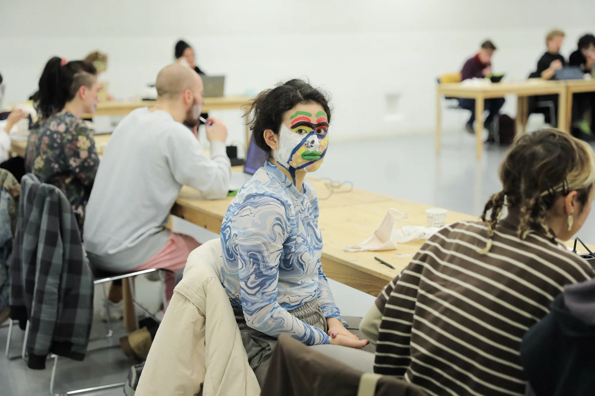

EL COS EMMASCARAT (2022)
programa de tallers / laSADCUM x CCCB
En connexió amb l'exposició LA MASTEGUÉS MAI ESMENTI (CCCB), vam proposar un programa detallers entorn de la relació entre el cos i la tecnologia per a reflexionar sobre lesformes de la invisibilitat contemporània del cos.
El comissariat d'activitats comptava amb ‘DOMESTIC FICTIONS’ taller sobre l'espaidomèstic virtualizado, amb Casa Antillón, ‘PRESENTAR EL COS EN L'ESCENARI VIRTUAL’ taller sobre performance en les xarxes socials, amb Candela Capitán, ‘CAMULFAR EL COS DE LA VIGILÀNCIA’ taller sobre reconeixement i identificació facials, amb Mentah i ‘DANCE THE INTERNET’ taller sobre moviment i cos des del found footage digital,amb Guillem Jiménez; així com els DJsets de JOVENDELAPERLA b2b BERENICE i DA ROCHA.
Més informació sobre el cicle d’activitats AQUÍ.
Fotos: Vicenzo Rigogliuso i Alice Brazzit

